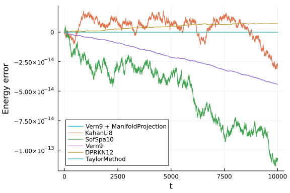
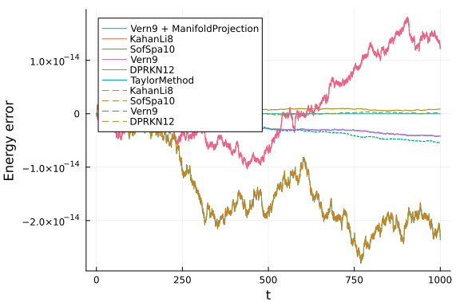

Hénon-Heiles Energy Conservation
In this notebook we will study the energy conservation properties of several high-order methods for the Hénon-Heiles system. We will se how the energy error behaves at very tight tolerances and how different techniques, such as using symplectic solvers or manifold projections, benchmark against each other. The Hamiltonian for this system is given by:
\[\mathcal{H}=\frac{1}{2}(p_1^2 + p_2^2) + \frac{1}{2}\left(q_1^2 + q_2^2 + 2q_1^2 q_2 - \frac{2}{3}q_2^3\right)\]
We will also compare the in place approach with the out of place approach by using Arrays (for the in place version) and StaticArrays (for out of place versions). In order to separate these two, we will use iip for the in-place names and oop for out of place ones.
using OrdinaryDiffEq, Plots, DiffEqCallbacks
using SciMLBenchmarks
using TaylorIntegration, LinearAlgebra, StaticArrays
gr(fmt=:png)
default(fmt=:png)
T(p) = 1//2 * norm(p)^2
V(q) = 1//2 * (q[1]^2 + q[2]^2 + 2q[1]^2 * q[2]- 2//3 * q[2]^3)
H(p,q, params) = T(p) + V(q)
function iip_dq(dq,p,q,params,t)
dq[1] = p[1]
dq[2] = p[2]
end
function iip_dp(dp,p,q,params,t)
dp[1] = -q[1] * (1 + 2q[2])
dp[2] = -q[2] - (q[1]^2 - q[2]^2)
end
const iip_q0 = [0.1, 0.]
const iip_p0 = [0., 0.5]
function oop_dq(p, q, params, t)
p
end
function oop_dp(p, q, params, t)
dp1 = -q[1] * (1 + 2q[2])
dp2 = -q[2] - (q[1]^2 - q[2]^2)
@SVector [dp1, dp2]
end
const oop_q0 = @SVector [0.1, 0.]
const oop_p0 = @SVector [0., 0.5]
function hamilton(du,u,p,t)
dq, q = @views u[3:4], du[3:4]
dp, p = @views u[1:2], du[1:2]
dp[1] = -q[1] * (1 + 2q[2])
dp[2] = -q[2] - (q[1]^2 - q[2]^2)
dq .= p
return nothing
end
function g(resid, u, p)
resid[1] = H([u[1],u[2]], [u[3],u[4]], nothing) - E
resid[2:4] .= 0
end
const cb = ManifoldProjection(g, nlopts=Dict(:ftol=>1e-13))
const E = H(iip_p0, iip_q0, nothing)0.13For the comparison we will use the following function
energy_err(sol) = map(i->H([sol[1,i], sol[2,i]], [sol[3,i], sol[4,i]], nothing)-E, 1:length(sol.u))
abs_energy_err(sol) = [abs.(H([sol[1,j], sol[2,j]], [sol[3,j], sol[4,j]], nothing) - E) for j=1:length(sol.u)]
function compare(mode=:inplace, all=true, plt=nothing; tmax=1e2)
if mode == :inplace
prob = DynamicalODEProblem(iip_dp, iip_dq, iip_p0, iip_q0, (0., tmax))
else
prob = DynamicalODEProblem(oop_dp, oop_dq, oop_p0, oop_q0, (0., tmax))
end
prob_linear = ODEProblem(hamilton, vcat(iip_p0, iip_q0), (0., tmax))
GC.gc()
(mode == :inplace && all) && @time sol1 = solve(prob, Vern9(), callback=cb, abstol=1e-14, reltol=1e-14)
GC.gc()
@time sol2 = solve(prob, KahanLi8(), dt=1e-2, maxiters=1e10)
GC.gc()
@time sol3 = solve(prob, SofSpa10(), dt=1e-2, maxiters=1e8)
GC.gc()
@time sol4 = solve(prob, Vern9(), abstol=1e-14, reltol=1e-14)
GC.gc()
@time sol5 = solve(prob, DPRKN12(), abstol=1e-14, reltol=1e-14)
GC.gc()
(mode == :inplace && all) && @time sol6 = solve(prob_linear, TaylorMethod(50), abstol=1e-20)
(mode == :inplace && all) && println("Vern9 + ManifoldProjection max energy error:\t"*
"$(maximum(abs_energy_err(sol1)))\tin\t$(length(sol1.u))\tsteps.")
println("KahanLi8 max energy error:\t\t\t$(maximum(abs_energy_err(sol2)))\tin\t$(length(sol2.u))\tsteps.")
println("SofSpa10 max energy error:\t\t\t$(maximum(abs_energy_err(sol3)))\tin\t$(length(sol3.u))\tsteps.")
println("Vern9 max energy error:\t\t\t\t$(maximum(abs_energy_err(sol4)))\tin\t$(length(sol4.u))\tsteps.")
println("DPRKN12 max energy error:\t\t\t$(maximum(abs_energy_err(sol5)))\tin\t$(length(sol5.u))\tsteps.")
(mode == :inplace && all) && println("TaylorMethod max energy error:\t\t\t$(maximum(abs_energy_err(sol6)))"*
"\tin\t$(length(sol6.u))\tsteps.")
if plt === nothing
plt = plot(xlabel="t", ylabel="Energy error")
end
(mode == :inplace && all) && plot!(sol1.t, energy_err(sol1), label="Vern9 + ManifoldProjection")
plot!(sol2.t, energy_err(sol2), label="KahanLi8", ls=mode==:inplace ? :solid : :dash)
plot!(sol3.t, energy_err(sol3), label="SofSpa10", ls=mode==:inplace ? :solid : :dash)
plot!(sol4.t, energy_err(sol4), label="Vern9", ls=mode==:inplace ? :solid : :dash)
plot!(sol5.t, energy_err(sol5), label="DPRKN12", ls=mode==:inplace ? :solid : :dash)
(mode == :inplace && all) && plot!(sol6.t, energy_err(sol6), label="TaylorMethod")
return plt
endcompare (generic function with 4 methods)The mode argument choses between the in place approach and the out of place one. The all parameter is used to compare only the integrators that support both the in place and the out of place versions (we reffer here only to the 6 high order methods chosen bellow). The plt argument can be used to overlay the results over a previous plot and the tmax keyword determines the simulation time.
Note:
- The
Vern9method is used withODEProblembecause of performance issues withArrayPartitionindexing which manifest forDynamicalODEProblem. - The
NLsolvecall used byManifoldProjectionwas modified to useftol=1e-13in order to obtain a very low energy error.
Here are the results of the comparisons between the in place methods:
compare(tmax=1e2)86.677919 seconds (158.88 M allocations: 9.349 GiB, 5.14% gc time, 99.99%
compilation time)
2.716626 seconds (5.31 M allocations: 334.646 MiB, 3.38% gc time, 99.72%
compilation time)
2.254694 seconds (2.93 M allocations: 187.289 MiB, 1.25% gc time, 99.54%
compilation time)
44.576013 seconds (51.73 M allocations: 3.128 GiB, 3.06% gc time, 99.99% c
ompilation time)
3.806314 seconds (3.49 M allocations: 219.307 MiB, 1.46% gc time, 99.97%
compilation time)
1.821381 seconds (2.28 M allocations: 154.086 MiB, 1.86% gc time, 99.94%
compilation time)
Vern9 + ManifoldProjection max energy error: 3.885780586188048e-16 in 1881
steps.
KahanLi8 max energy error: 4.9404924595819466e-15 in 10001 steps.
SofSpa10 max energy error: 5.440092820663267e-15 in 10001 steps.
Vern9 max energy error: 3.885780586188048e-16 in 941 steps.
DPRKN12 max energy error: 1.942890293094024e-16 in 385 steps.
TaylorMethod max energy error: 0.0 in 2 steps.
compare(tmax=1e3)0.079207 seconds (1.03 M allocations: 69.172 MiB)
0.070062 seconds (700.10 k allocations: 61.899 MiB)
0.108297 seconds (700.10 k allocations: 61.901 MiB)
0.034577 seconds (326.72 k allocations: 20.258 MiB)
0.005689 seconds (72.14 k allocations: 3.121 MiB)
0.000714 seconds (2.02 k allocations: 759.844 KiB)
Vern9 + ManifoldProjection max energy error: 4.9960036108132044e-15 in 1865
9 steps.
KahanLi8 max energy error: 1.815214645262131e-14 in 100002 steps.
SofSpa10 max energy error: 2.8033131371785203e-14 in 100002 steps.
Vern9 max energy error: 4.9960036108132044e-15 in 9330 steps.
DPRKN12 max energy error: 1.27675647831893e-15 in 3787 steps.
TaylorMethod max energy error: 0.0 in 2 steps.
compare(tmax=1e4)1.248434 seconds (10.25 M allocations: 685.919 MiB, 29.03% gc time)
0.926814 seconds (7.00 M allocations: 579.841 MiB, 12.48% gc time)
1.381545 seconds (7.00 M allocations: 579.843 MiB, 19.20% gc time)
0.337701 seconds (3.26 M allocations: 203.181 MiB)
0.054402 seconds (718.64 k allocations: 32.470 MiB)
0.000698 seconds (2.02 k allocations: 759.844 KiB)
Vern9 + ManifoldProjection max energy error: 4.440892098500626e-14 in 18643
1 steps.
KahanLi8 max energy error: 3.161360062620133e-14 in 1000001 steps.
SofSpa10 max energy error: 1.136590821460004e-13 in 1000001 steps.
Vern9 max energy error: 4.440892098500626e-14 in 93216 steps.
DPRKN12 max energy error: 8.104628079763643e-15 in 37813 steps.
TaylorMethod max energy error: 0.0 in 2 steps.
compare(tmax=5e4)6.573684 seconds (51.45 M allocations: 3.340 GiB, 29.33% gc time, 1.73% c
ompilation time)
5.580664 seconds (35.00 M allocations: 2.831 GiB, 26.87% gc time)
7.366414 seconds (35.00 M allocations: 2.831 GiB, 24.72% gc time)
1.670743 seconds (16.31 M allocations: 1001.902 MiB)
0.273859 seconds (3.59 M allocations: 155.672 MiB)
0.001116 seconds (2.02 k allocations: 759.844 KiB)
Vern9 + ManifoldProjection max energy error: 1.0000333894311098e-13 in 9320
93 steps.
KahanLi8 max energy error: 1.2331802246023926e-13 in 5000001 steps.
SofSpa10 max energy error: 1.5035195310986182e-13 in 5000001 steps.
Vern9 max energy error: 2.108035968007016e-13 in 466047 steps.
DPRKN12 max energy error: 3.6387559632089506e-14 in 189040 steps.
TaylorMethod max energy error: 0.0 in 2 steps.We can see that as the simulation time increases, the energy error increases. For this particular example the energy error for all the methods is comparable. For relatively short simulation times, if a highly accurate solution is required, the symplectic method is not recommended as its energy error fluctuations are larger than for other methods. An other thing to notice is the fact that the two versions of Vern9 behave identically, as expected, until the energy error set by ftol is reached.
We will now compare the in place with the out of place versions. In the plots bellow we will use a dashed line for the out of place versions.
function in_vs_out(;all=false, tmax=1e2)
println("In place versions:")
plt = compare(:inplace, all, tmax=tmax)
println("\nOut of place versions:")
plt = compare(:oop, false, plt; tmax=tmax)
endin_vs_out (generic function with 1 method)First, here is a summary of all the available methods for tmax = 1e3:
in_vs_out(all=true, tmax=1e3)In place versions:
0.100256 seconds (1.03 M allocations: 69.172 MiB)
0.069883 seconds (700.10 k allocations: 61.899 MiB)
0.108527 seconds (700.10 k allocations: 61.901 MiB)
0.034573 seconds (326.72 k allocations: 20.258 MiB)
0.005688 seconds (72.14 k allocations: 3.121 MiB)
0.000707 seconds (2.02 k allocations: 759.844 KiB)
Vern9 + ManifoldProjection max energy error: 4.9960036108132044e-15 in 1865
9 steps.
KahanLi8 max energy error: 1.815214645262131e-14 in 100002 steps.
SofSpa10 max energy error: 2.8033131371785203e-14 in 100002 steps.
Vern9 max energy error: 4.9960036108132044e-15 in 9330 steps.
DPRKN12 max energy error: 1.27675647831893e-15 in 3787 steps.
TaylorMethod max energy error: 0.0 in 2 steps.
Out of place versions:
1.513064 seconds (2.69 M allocations: 193.834 MiB, 4.12% gc time, 95.92%
compilation time)
0.704514 seconds (1.07 M allocations: 83.387 MiB, 94.24% compilation time
)
1.441128 seconds (2.90 M allocations: 155.806 MiB, 2.36% gc time, 99.68%
compilation time)
0.988159 seconds (1.08 M allocations: 68.799 MiB, 99.82% compilation time
)
KahanLi8 max energy error: 1.815214645262131e-14 in 100002 steps.
SofSpa10 max energy error: 2.8033131371785203e-14 in 100002 steps.
Vern9 max energy error: 4.496403249731884e-15 in 9330 steps.
DPRKN12 max energy error: 1.27675647831893e-15 in 3787 steps.
Now we will compare the in place and the out of place versions, but only for the integrators that are compatible with StaticArrays
in_vs_out(tmax=1e2)In place versions:
0.007299 seconds (70.09 k allocations: 5.806 MiB)
0.009681 seconds (70.09 k allocations: 5.808 MiB)
0.002990 seconds (33.10 k allocations: 2.076 MiB)
0.000616 seconds (7.49 k allocations: 352.203 KiB)
KahanLi8 max energy error: 4.9404924595819466e-15 in 10001 steps.
SofSpa10 max energy error: 5.440092820663267e-15 in 10001 steps.
Vern9 max energy error: 3.885780586188048e-16 in 941 steps.
DPRKN12 max energy error: 1.942890293094024e-16 in 385 steps.
Out of place versions:
0.002734 seconds (10.02 k allocations: 1.682 MiB)
0.004039 seconds (10.02 k allocations: 1.682 MiB)
0.000514 seconds (971 allocations: 500.562 KiB)
0.000281 seconds (412 allocations: 99.344 KiB)
KahanLi8 max energy error: 4.9404924595819466e-15 in 10001 steps.
SofSpa10 max energy error: 5.440092820663267e-15 in 10001 steps.
Vern9 max energy error: 3.3306690738754696e-16 in 941 steps.
DPRKN12 max energy error: 1.942890293094024e-16 in 385 steps.
in_vs_out(tmax=1e3)In place versions:
0.066382 seconds (700.10 k allocations: 61.899 MiB)
0.102688 seconds (700.10 k allocations: 61.901 MiB)
0.033129 seconds (326.72 k allocations: 20.258 MiB)
0.005666 seconds (72.14 k allocations: 3.121 MiB)
KahanLi8 max energy error: 1.815214645262131e-14 in 100002 steps.
SofSpa10 max energy error: 2.8033131371785203e-14 in 100002 steps.
Vern9 max energy error: 4.9960036108132044e-15 in 9330 steps.
DPRKN12 max energy error: 1.27675647831893e-15 in 3787 steps.
Out of place versions:
0.029030 seconds (100.03 k allocations: 21.886 MiB)
0.039693 seconds (100.03 k allocations: 21.887 MiB)
0.004676 seconds (9.37 k allocations: 4.464 MiB)
0.001817 seconds (3.82 k allocations: 803.531 KiB)
KahanLi8 max energy error: 1.815214645262131e-14 in 100002 steps.
SofSpa10 max energy error: 2.8033131371785203e-14 in 100002 steps.
Vern9 max energy error: 4.496403249731884e-15 in 9330 steps.
DPRKN12 max energy error: 1.27675647831893e-15 in 3787 steps.
in_vs_out(tmax=1e4)In place versions:
1.053828 seconds (7.00 M allocations: 579.841 MiB, 24.32% gc time)
1.298132 seconds (7.00 M allocations: 579.843 MiB, 14.45% gc time)
0.341107 seconds (3.26 M allocations: 203.181 MiB)
0.053934 seconds (718.64 k allocations: 32.470 MiB)
KahanLi8 max energy error: 3.161360062620133e-14 in 1000001 steps.
SofSpa10 max energy error: 1.136590821460004e-13 in 1000001 steps.
Vern9 max energy error: 4.440892098500626e-14 in 93216 steps.
DPRKN12 max energy error: 8.104628079763643e-15 in 37813 steps.
Out of place versions:
0.315389 seconds (1.00 M allocations: 167.850 MiB, 6.65% gc time)
0.438038 seconds (1.00 M allocations: 167.850 MiB, 8.03% gc time)
0.049011 seconds (93.26 k allocations: 45.375 MiB)
0.016480 seconds (37.85 k allocations: 10.021 MiB)
KahanLi8 max energy error: 3.161360062620133e-14 in 1000001 steps.
SofSpa10 max energy error: 1.136590821460004e-13 in 1000001 steps.
Vern9 max energy error: 4.4797499043625066e-14 in 93215 steps.
DPRKN12 max energy error: 8.104628079763643e-15 in 37813 steps.
in_vs_out(tmax=5e4)In place versions:
7.513751 seconds (35.00 M allocations: 2.831 GiB, 45.90% gc time)
6.613498 seconds (35.00 M allocations: 2.831 GiB, 16.13% gc time)
1.670954 seconds (16.31 M allocations: 1001.902 MiB)
0.272723 seconds (3.59 M allocations: 155.672 MiB)
KahanLi8 max energy error: 1.2331802246023926e-13 in 5000001 steps.
SofSpa10 max energy error: 1.5035195310986182e-13 in 5000001 steps.
Vern9 max energy error: 2.108035968007016e-13 in 466047 steps.
DPRKN12 max energy error: 3.6387559632089506e-14 in 189040 steps.
Out of place versions:
1.527744 seconds (5.00 M allocations: 839.236 MiB, 3.89% gc time)
2.091271 seconds (5.00 M allocations: 839.237 MiB, 5.05% gc time)
0.231359 seconds (466.10 k allocations: 208.068 MiB)
0.079695 seconds (189.09 k allocations: 39.705 MiB)
KahanLi8 max energy error: 1.2331802246023926e-13 in 5000001 steps.
SofSpa10 max energy error: 1.5035195310986182e-13 in 5000001 steps.
Vern9 max energy error: 2.246258734572848e-13 in 466047 steps.
DPRKN12 max energy error: 3.6387559632089506e-14 in 189040 steps.
As we see from the above comparisons, the StaticArray versions are significantly faster and use less memory. The speedup provided for the out of place version is more proeminent at larger values for tmax. We can see again that if the simulation time is increased, the energy error of the symplectic methods is less noticeable compared to the rest of the methods.
The benchmarks were performed on a machine with
Appendix
These benchmarks are a part of the SciMLBenchmarks.jl repository, found at: https://github.com/SciML/SciMLBenchmarks.jl. For more information on high-performance scientific machine learning, check out the SciML Open Source Software Organization https://sciml.ai.
To locally run this benchmark, do the following commands:
using SciMLBenchmarks
SciMLBenchmarks.weave_file("benchmarks/DynamicalODE","Henon-Heiles_energy_conservation_benchmark.jmd")Computer Information:
Julia Version 1.9.4
Commit 8e5136fa297 (2023-11-14 08:46 UTC)
Build Info:
Official https://julialang.org/ release
Platform Info:
OS: Linux (x86_64-linux-gnu)
CPU: 128 × AMD EPYC 7502 32-Core Processor
WORD_SIZE: 64
LIBM: libopenlibm
LLVM: libLLVM-14.0.6 (ORCJIT, znver2)
Threads: 128 on 128 virtual cores
Environment:
JULIA_CPU_THREADS = 128
JULIA_DEPOT_PATH = /cache/julia-buildkite-plugin/depots/5b300254-1738-4989-ae0a-f4d2d937f953
JULIA_IMAGE_THREADS = 1
Package Information:
Status `/cache/build/exclusive-amdci1-0/julialang/scimlbenchmarks-dot-jl/benchmarks/DynamicalODE/Project.toml`
⌃ [459566f4] DiffEqCallbacks v2.27.0
⌃ [055956cb] DiffEqPhysics v3.11.0
[b305315f] Elliptic v1.0.1
⌃ [1dea7af3] OrdinaryDiffEq v6.53.4
⌃ [65888b18] ParameterizedFunctions v5.15.0
⌃ [91a5bcdd] Plots v1.38.17
⌃ [d330b81b] PyPlot v2.11.1
[31c91b34] SciMLBenchmarks v0.1.3
⌃ [90137ffa] StaticArrays v1.6.2
⌃ [92b13dbe] TaylorIntegration v0.14.2
[37e2e46d] LinearAlgebra
[de0858da] Printf
[10745b16] Statistics v1.9.0
Info Packages marked with ⌃ have new versions available and may be upgradable.
Warning The project dependencies or compat requirements have changed since the manifest was last resolved. It is recommended to `Pkg.resolve()` or consider `Pkg.update()` if necessary.And the full manifest:
Status `/cache/build/exclusive-amdci1-0/julialang/scimlbenchmarks-dot-jl/benchmarks/DynamicalODE/Manifest.toml`
⌅ [47edcb42] ADTypes v0.1.6
⌅ [c3fe647b] AbstractAlgebra v0.31.0
[1520ce14] AbstractTrees v0.4.4
⌃ [79e6a3ab] Adapt v3.6.2
[ec485272] ArnoldiMethod v0.2.0
⌃ [4fba245c] ArrayInterface v7.4.11
[30b0a656] ArrayInterfaceCore v0.1.29
⌃ [6e4b80f9] BenchmarkTools v1.3.2
⌃ [e2ed5e7c] Bijections v0.1.4
⌃ [d1d4a3ce] BitFlags v0.1.7
[62783981] BitTwiddlingConvenienceFunctions v0.1.5
⌃ [2a0fbf3d] CPUSummary v0.2.3
[00ebfdb7] CSTParser v3.3.6
[49dc2e85] Calculus v0.5.1
⌃ [d360d2e6] ChainRulesCore v1.16.0
[fb6a15b2] CloseOpenIntervals v0.1.12
⌃ [944b1d66] CodecZlib v0.7.2
⌃ [35d6a980] ColorSchemes v3.22.0
[3da002f7] ColorTypes v0.11.4
[c3611d14] ColorVectorSpace v0.10.0
[5ae59095] Colors v0.12.10
[861a8166] Combinatorics v1.0.2
[a80b9123] CommonMark v0.8.12
[38540f10] CommonSolve v0.2.4
[bbf7d656] CommonSubexpressions v0.3.0
⌃ [34da2185] Compat v4.8.0
[b152e2b5] CompositeTypes v0.1.3
⌃ [f0e56b4a] ConcurrentUtilities v2.2.1
⌃ [8f4d0f93] Conda v1.9.1
⌃ [187b0558] ConstructionBase v1.5.3
[d38c429a] Contour v0.6.2
[adafc99b] CpuId v0.3.1
[a8cc5b0e] Crayons v4.1.1
[9a962f9c] DataAPI v1.15.0
⌃ [864edb3b] DataStructures v0.18.14
[e2d170a0] DataValueInterfaces v1.0.0
[8bb1440f] DelimitedFiles v1.9.1
⌃ [2b5f629d] DiffEqBase v6.127.0
⌃ [459566f4] DiffEqCallbacks v2.27.0
⌃ [055956cb] DiffEqPhysics v3.11.0
[163ba53b] DiffResults v1.1.0
[b552c78f] DiffRules v1.15.1
⌃ [b4f34e82] Distances v0.10.9
⌃ [31c24e10] Distributions v0.25.98
[ffbed154] DocStringExtensions v0.9.3
⌅ [5b8099bc] DomainSets v0.6.7
[fa6b7ba4] DualNumbers v0.6.8
⌃ [7c1d4256] DynamicPolynomials v0.5.2
[b305315f] Elliptic v1.0.1
[4e289a0a] EnumX v1.0.4
[6912e4f1] Espresso v0.6.1
[460bff9d] ExceptionUnwrapping v0.1.9
⌃ [d4d017d3] ExponentialUtilities v1.24.0
[e2ba6199] ExprTools v0.1.10
[c87230d0] FFMPEG v0.4.1
⌃ [7034ab61] FastBroadcast v0.2.6
[9aa1b823] FastClosures v0.3.2
[29a986be] FastLapackInterface v2.0.0
⌃ [1a297f60] FillArrays v1.5.0
[6a86dc24] FiniteDiff v2.21.1
[53c48c17] FixedPointNumbers v0.8.4
[59287772] Formatting v0.4.2
⌃ [f6369f11] ForwardDiff v0.10.35
[069b7b12] FunctionWrappers v1.1.3
[77dc65aa] FunctionWrappersWrappers v0.1.3
[46192b85] GPUArraysCore v0.1.5
⌃ [28b8d3ca] GR v0.72.9
[c145ed77] GenericSchur v0.5.3
[d7ba0133] Git v1.3.0
[c27321d9] Glob v1.3.1
⌃ [86223c79] Graphs v1.8.0
[42e2da0e] Grisu v1.0.2
⌅ [0b43b601] Groebner v0.4.2
⌃ [d5909c97] GroupsCore v0.4.0
⌃ [cd3eb016] HTTP v1.9.14
[eafb193a] Highlights v0.5.2
⌃ [3e5b6fbb] HostCPUFeatures v0.1.15
[34004b35] HypergeometricFunctions v0.3.23
[7073ff75] IJulia v1.24.2
[615f187c] IfElse v0.1.1
⌃ [d25df0c9] Inflate v0.1.3
[18e54dd8] IntegerMathUtils v0.1.2
⌃ [8197267c] IntervalSets v0.7.7
[92d709cd] IrrationalConstants v0.2.2
[82899510] IteratorInterfaceExtensions v1.0.0
⌃ [1019f520] JLFzf v0.1.5
⌃ [692b3bcd] JLLWrappers v1.4.1
[682c06a0] JSON v0.21.4
⌃ [98e50ef6] JuliaFormatter v1.0.34
⌃ [ccbc3e58] JumpProcesses v9.7.2
⌃ [ef3ab10e] KLU v0.4.0
⌃ [ba0b0d4f] Krylov v0.9.2
⌃ [b964fa9f] LaTeXStrings v1.3.0
[2ee39098] LabelledArrays v1.14.0
[984bce1d] LambertW v0.4.6
⌅ [23fbe1c1] Latexify v0.15.21
⌃ [10f19ff3] LayoutPointers v0.1.14
[50d2b5c4] Lazy v0.15.1
[1d6d02ad] LeftChildRightSiblingTrees v0.2.0
[d3d80556] LineSearches v7.2.0
⌃ [7ed4a6bd] LinearSolve v2.4.2
⌃ [2ab3a3ac] LogExpFunctions v0.3.24
⌃ [e6f89c97] LoggingExtras v1.0.0
⌃ [bdcacae8] LoopVectorization v0.12.165
[d8e11817] MLStyle v0.4.17
⌃ [1914dd2f] MacroTools v0.5.10
[d125e4d3] ManualMemory v0.1.8
⌃ [739be429] MbedTLS v1.1.7
[442fdcdd] Measures v0.3.2
[e1d29d7a] Missings v1.1.0
⌃ [961ee093] ModelingToolkit v8.64.0
[46d2c3a1] MuladdMacro v0.2.4
⌃ [102ac46a] MultivariatePolynomials v0.5.1
⌃ [ffc61752] Mustache v1.0.17
⌃ [d8a4904e] MutableArithmetics v1.3.0
[d41bc354] NLSolversBase v7.8.3
[2774e3e8] NLsolve v4.5.1
[77ba4419] NaNMath v1.0.2
⌅ [8913a72c] NonlinearSolve v1.9.0
[6fe1bfb0] OffsetArrays v1.12.10
[4d8831e6] OpenSSL v1.4.1
⌃ [bac558e1] OrderedCollections v1.6.2
⌃ [1dea7af3] OrdinaryDiffEq v6.53.4
⌃ [90014a1f] PDMats v0.11.17
⌃ [65ce6f38] PackageExtensionCompat v1.0.0
⌃ [65888b18] ParameterizedFunctions v5.15.0
[d96e819e] Parameters v0.12.3
⌃ [69de0a69] Parsers v2.7.2
[b98c9c47] Pipe v1.3.0
[32113eaa] PkgBenchmark v0.2.12
[ccf2f8ad] PlotThemes v3.1.0
[995b91a9] PlotUtils v1.3.5
⌃ [91a5bcdd] Plots v1.38.17
[e409e4f3] PoissonRandom v0.4.4
⌃ [f517fe37] Polyester v0.7.5
[1d0040c9] PolyesterWeave v0.2.1
[d236fae5] PreallocationTools v0.4.12
⌃ [aea7be01] PrecompileTools v1.1.2
⌃ [21216c6a] Preferences v1.4.0
⌃ [27ebfcd6] Primes v0.5.4
[33c8b6b6] ProgressLogging v0.1.4
⌃ [438e738f] PyCall v1.96.1
⌃ [d330b81b] PyPlot v2.11.1
⌃ [1fd47b50] QuadGK v2.8.2
⌃ [fb686558] RandomExtensions v0.4.3
[e6cf234a] RandomNumbers v1.5.3
[3cdcf5f2] RecipesBase v1.3.4
[01d81517] RecipesPipeline v0.6.12
⌃ [731186ca] RecursiveArrayTools v2.38.7
⌃ [f2c3362d] RecursiveFactorization v0.2.18
[189a3867] Reexport v1.2.2
⌃ [05181044] RelocatableFolders v1.0.0
[ae029012] Requires v1.3.0
[79098fc4] Rmath v0.7.1
⌃ [7e49a35a] RuntimeGeneratedFunctions v0.5.11
⌃ [fdea26ae] SIMD v3.4.5
[94e857df] SIMDTypes v0.1.0
⌃ [476501e8] SLEEFPirates v0.6.39
⌅ [0bca4576] SciMLBase v1.94.0
[31c91b34] SciMLBenchmarks v0.1.3
⌃ [e9a6253c] SciMLNLSolve v0.1.8
⌃ [c0aeaf25] SciMLOperators v0.3.6
⌃ [6c6a2e73] Scratch v1.2.0
[efcf1570] Setfield v1.1.1
[992d4aef] Showoff v1.0.3
[777ac1f9] SimpleBufferStream v1.1.0
⌅ [727e6d20] SimpleNonlinearSolve v0.1.19
[699a6c99] SimpleTraits v0.9.4
[ce78b400] SimpleUnPack v1.1.0
[66db9d55] SnoopPrecompile v1.0.3
[b85f4697] SoftGlobalScope v1.1.0
⌃ [a2af1166] SortingAlgorithms v1.1.1
⌃ [47a9eef4] SparseDiffTools v2.4.1
[e56a9233] Sparspak v0.3.9
⌃ [276daf66] SpecialFunctions v2.3.0
[aedffcd0] Static v0.8.8
⌃ [0d7ed370] StaticArrayInterface v1.4.0
⌃ [90137ffa] StaticArrays v1.6.2
[1e83bf80] StaticArraysCore v1.4.2
⌃ [82ae8749] StatsAPI v1.6.0
⌃ [2913bbd2] StatsBase v0.34.0
[4c63d2b9] StatsFuns v1.3.0
⌅ [7792a7ef] StrideArraysCore v0.4.17
[69024149] StringEncodings v0.3.7
[2efcf032] SymbolicIndexingInterface v0.2.2
⌃ [d1185830] SymbolicUtils v1.2.0
⌃ [0c5d862f] Symbolics v5.5.1
[3783bdb8] TableTraits v1.0.1
⌃ [bd369af6] Tables v1.10.1
⌃ [92b13dbe] TaylorIntegration v0.14.2
⌃ [6aa5eb33] TaylorSeries v0.15.2
[62fd8b95] TensorCore v0.1.1
[5d786b92] TerminalLoggers v0.1.7
[8290d209] ThreadingUtilities v0.5.2
[a759f4b9] TimerOutputs v0.5.23
⌃ [0796e94c] Tokenize v0.5.25
⌅ [3bb67fe8] TranscodingStreams v0.9.13
[a2a6695c] TreeViews v0.3.0
⌃ [d5829a12] TriangularSolve v0.1.19
⌃ [410a4b4d] Tricks v0.1.7
[781d530d] TruncatedStacktraces v1.4.0
⌃ [5c2747f8] URIs v1.4.2
[3a884ed6] UnPack v1.0.2
[1cfade01] UnicodeFun v0.4.1
⌃ [1986cc42] Unitful v1.16.0
[45397f5d] UnitfulLatexify v1.6.3
[a7c27f48] Unityper v0.1.5
[41fe7b60] Unzip v0.2.0
⌃ [3d5dd08c] VectorizationBase v0.21.64
[81def892] VersionParsing v1.3.0
[19fa3120] VertexSafeGraphs v0.2.0
[44d3d7a6] Weave v0.10.12
[ddb6d928] YAML v0.4.9
[c2297ded] ZMQ v1.2.2
⌃ [700de1a5] ZygoteRules v0.2.3
[6e34b625] Bzip2_jll v1.0.8+0
[83423d85] Cairo_jll v1.16.1+1
[2e619515] Expat_jll v2.5.0+0
⌃ [b22a6f82] FFMPEG_jll v4.4.2+2
[a3f928ae] Fontconfig_jll v2.13.93+0
[d7e528f0] FreeType2_jll v2.13.1+0
[559328eb] FriBidi_jll v1.0.10+0
[0656b61e] GLFW_jll v3.3.8+0
⌅ [d2c73de3] GR_jll v0.72.9+0
[78b55507] Gettext_jll v0.21.0+0
⌃ [f8c6e375] Git_jll v2.36.1+2
⌃ [7746bdde] Glib_jll v2.74.0+2
[3b182d85] Graphite2_jll v1.3.14+0
[2e76f6c2] HarfBuzz_jll v2.8.1+1
⌃ [aacddb02] JpegTurbo_jll v2.1.91+0
[c1c5ebd0] LAME_jll v3.100.1+0
[88015f11] LERC_jll v3.0.0+1
[1d63c593] LLVMOpenMP_jll v15.0.4+0
[dd4b983a] LZO_jll v2.10.1+0
⌅ [e9f186c6] Libffi_jll v3.2.2+1
[d4300ac3] Libgcrypt_jll v1.8.7+0
[7e76a0d4] Libglvnd_jll v1.6.0+0
[7add5ba3] Libgpg_error_jll v1.42.0+0
⌃ [94ce4f54] Libiconv_jll v1.16.1+2
[4b2f31a3] Libmount_jll v2.35.0+0
[89763e89] Libtiff_jll v4.5.1+1
[38a345b3] Libuuid_jll v2.36.0+0
[e7412a2a] Ogg_jll v1.3.5+1
⌅ [458c3c95] OpenSSL_jll v1.1.21+0
[efe28fd5] OpenSpecFun_jll v0.5.5+0
[91d4177d] Opus_jll v1.3.2+0
[30392449] Pixman_jll v0.42.2+0
⌅ [c0090381] Qt6Base_jll v6.4.2+3
[f50d1b31] Rmath_jll v0.4.0+0
⌃ [a2964d1f] Wayland_jll v1.21.0+0
[2381bf8a] Wayland_protocols_jll v1.25.0+0
⌃ [02c8fc9c] XML2_jll v2.10.3+0
[aed1982a] XSLT_jll v1.1.34+0
⌃ [ffd25f8a] XZ_jll v5.4.3+1
[4f6342f7] Xorg_libX11_jll v1.8.6+0
[0c0b7dd1] Xorg_libXau_jll v1.0.11+0
[935fb764] Xorg_libXcursor_jll v1.2.0+4
[a3789734] Xorg_libXdmcp_jll v1.1.4+0
[1082639a] Xorg_libXext_jll v1.3.4+4
[d091e8ba] Xorg_libXfixes_jll v5.0.3+4
[a51aa0fd] Xorg_libXi_jll v1.7.10+4
[d1454406] Xorg_libXinerama_jll v1.1.4+4
[ec84b674] Xorg_libXrandr_jll v1.5.2+4
[ea2f1a96] Xorg_libXrender_jll v0.9.10+4
[14d82f49] Xorg_libpthread_stubs_jll v0.1.1+0
[c7cfdc94] Xorg_libxcb_jll v1.15.0+0
[cc61e674] Xorg_libxkbfile_jll v1.1.2+0
[12413925] Xorg_xcb_util_image_jll v0.4.0+1
[2def613f] Xorg_xcb_util_jll v0.4.0+1
[975044d2] Xorg_xcb_util_keysyms_jll v0.4.0+1
[0d47668e] Xorg_xcb_util_renderutil_jll v0.3.9+1
[c22f9ab0] Xorg_xcb_util_wm_jll v0.4.1+1
[35661453] Xorg_xkbcomp_jll v1.4.6+0
[33bec58e] Xorg_xkeyboard_config_jll v2.39.0+0
[c5fb5394] Xorg_xtrans_jll v1.5.0+0
[8f1865be] ZeroMQ_jll v4.3.4+0
[3161d3a3] Zstd_jll v1.5.5+0
⌅ [214eeab7] fzf_jll v0.29.0+0
[a4ae2306] libaom_jll v3.4.0+0
[0ac62f75] libass_jll v0.15.1+0
[f638f0a6] libfdk_aac_jll v2.0.2+0
⌃ [b53b4c65] libpng_jll v1.6.38+0
[a9144af2] libsodium_jll v1.0.20+0
[f27f6e37] libvorbis_jll v1.3.7+1
[1270edf5] x264_jll v2021.5.5+0
[dfaa095f] x265_jll v3.5.0+0
⌃ [d8fb68d0] xkbcommon_jll v1.4.1+0
[0dad84c5] ArgTools v1.1.1
[56f22d72] Artifacts
[2a0f44e3] Base64
[ade2ca70] Dates
[8ba89e20] Distributed
[f43a241f] Downloads v1.6.0
[7b1f6079] FileWatching
[9fa8497b] Future
[b77e0a4c] InteractiveUtils
[b27032c2] LibCURL v0.6.3
[76f85450] LibGit2
[8f399da3] Libdl
[37e2e46d] LinearAlgebra
[56ddb016] Logging
[d6f4376e] Markdown
[a63ad114] Mmap
[ca575930] NetworkOptions v1.2.0
[44cfe95a] Pkg v1.9.0
[de0858da] Printf
[9abbd945] Profile
[3fa0cd96] REPL
[9a3f8284] Random
[ea8e919c] SHA v0.7.0
[9e88b42a] Serialization
[1a1011a3] SharedArrays
[6462fe0b] Sockets
[2f01184e] SparseArrays
[10745b16] Statistics v1.9.0
[4607b0f0] SuiteSparse
[fa267f1f] TOML v1.0.3
[a4e569a6] Tar v1.10.0
[8dfed614] Test
[cf7118a7] UUIDs
[4ec0a83e] Unicode
[e66e0078] CompilerSupportLibraries_jll v1.0.2+0
[deac9b47] LibCURL_jll v7.84.0+0
[29816b5a] LibSSH2_jll v1.10.2+0
[c8ffd9c3] MbedTLS_jll v2.28.2+0
[14a3606d] MozillaCACerts_jll v2022.10.11
[4536629a] OpenBLAS_jll v0.3.21+4
[05823500] OpenLibm_jll v0.8.1+0
[efcefdf7] PCRE2_jll v10.42.0+0
[bea87d4a] SuiteSparse_jll v5.10.1+6
[83775a58] Zlib_jll v1.2.13+0
[8e850b90] libblastrampoline_jll v5.8.0+0
[8e850ede] nghttp2_jll v1.48.0+0
[3f19e933] p7zip_jll v17.4.0+0
Info Packages marked with ⌃ and ⌅ have new versions available. Those with ⌃ may be upgradable, but those with ⌅ are restricted by compatibility constraints from upgrading. To see why use `status --outdated -m`
Warning The project dependencies or compat requirements have changed since the manifest was last resolved. It is recommended to `Pkg.resolve()` or consider `Pkg.update()` if necessary.